Hotbox
A Smart Meal Planner App

How do we encourage people to eat healthier and cooking easier in Indian households?
A need for better diet habits
Sensitivity towards food, nutritional requirements of a person is greatly decreasing day by day. Data released by WHO suggests that over the past 33 years, worldwide overweight and obesity rates among adults have increased by
27.5%, while such rates among children have increased by 47.1%.
Our aim was to explore the possibilities to contribute to the betterment of sensitivity towards food, nutrition and diets in households in India using contextual research and design intervention.
"The whole act of cooking is a complex process of managing several simple tasks"
The Solution
The App, using a person’s specific needs and preferences, considering a variety of factors creates a meal plan that's easy to follow and fully customisable.
Hotbox is an all in one tool for managing your every cooking need.
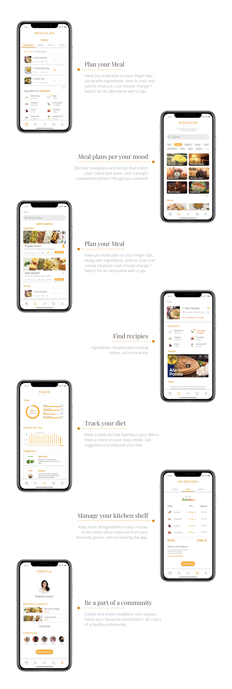
Spotify is not just for listening to songs, it's for listenting to playlists. So is Hotbox, not just for dishes, but for your Meal Plans.
Research
Contextual Interviews
To understand the dietary behaviour of households, we started our research with contextual interviews.
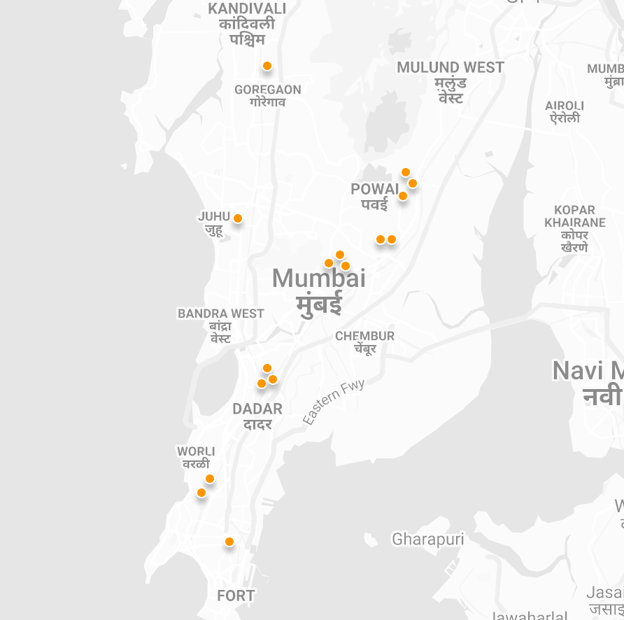
Interview locations
Our initial target users were anyone who cooks or manages cooking at home. After a few interviews we redefined our target users as households with multiple members and working adults.
To prevent biases and avoiding missing out on details, we created a guideline to conduct interviews.
- Interviewing users when and where they cook
- Observing the user while they plan and cook
- Taking the role of an apprentice with the user, as a master
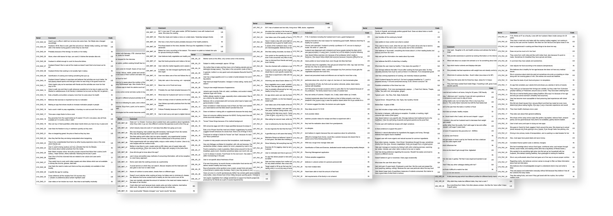
Notes from interviews
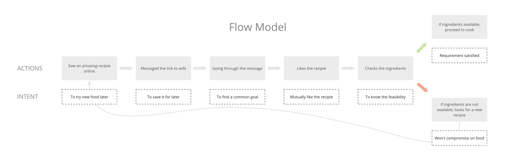
Affinity Mapping
Interview notes offered us a good insight about each user’s dietary behaviour. But individuals tend to have biases and specific focus points and it is necessary to consolidate every perspective to see if there are patterns that emerge.
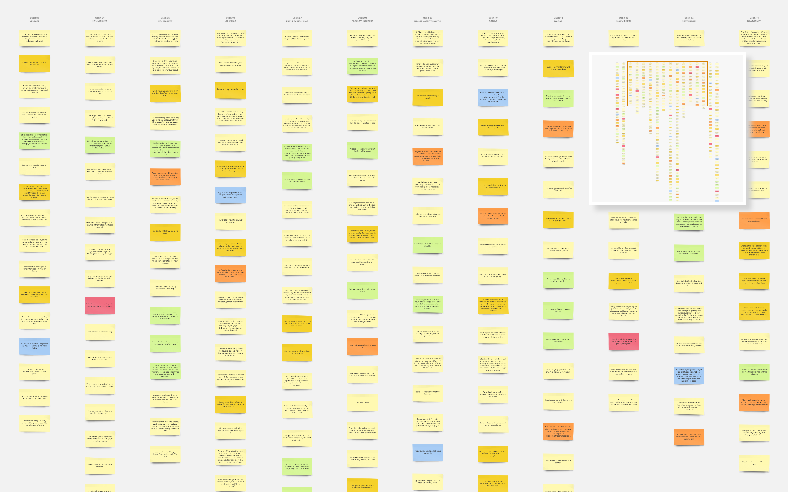
Categorising interview notes
Each of the interview points were classified and color coded.
- User Statements
- Insights
- Contextual Inquiry
- Breakdown
- Design Intervention
- Follow-up Questions
The notes were then clubbed together based on similarity and causation. This helped in reducing about 450 notes into few categories that offered the essence of the collective insight.
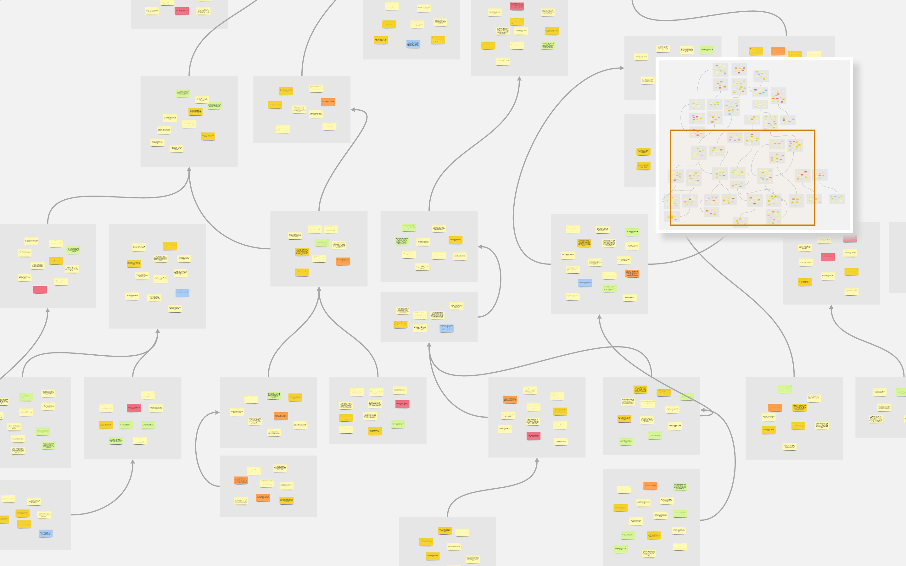
Building the affinity map bottom-up
Any pattern identified is an area to work on. At this stage we got to see a broader perspective by connecting the dots from each observation and creating inferences. These inferences led to the development of meaningful insights that were invisible earlier.
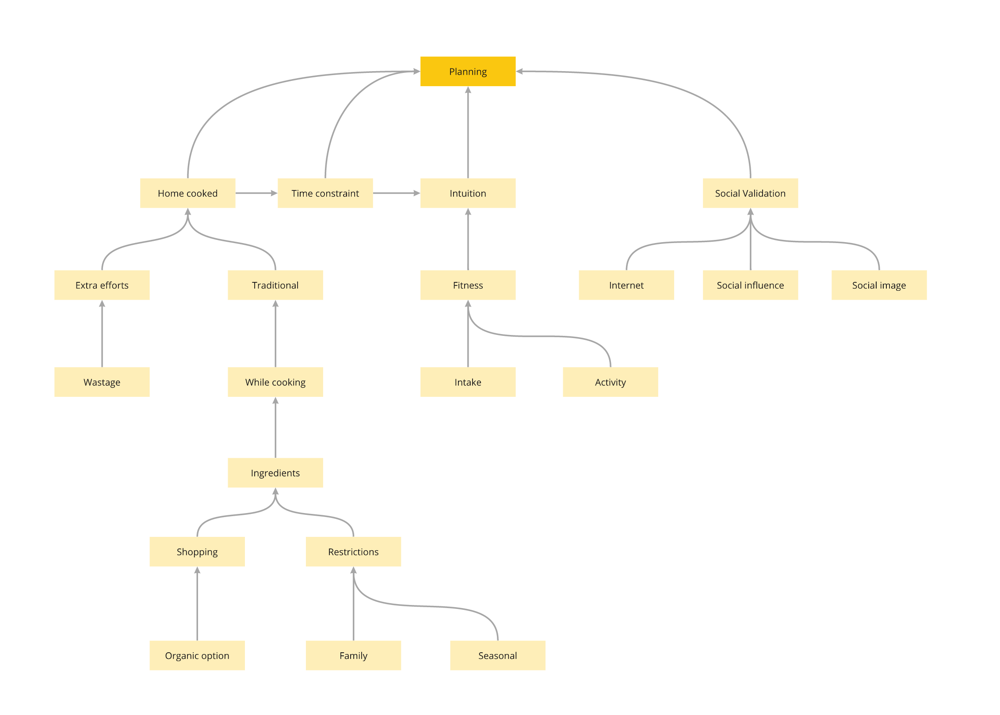
Affinity structure ( simplified )
From the affinity maps, we were able to establish causation, intent and other other dynamics involved in the act of cooking. We then extracted the top insights from affinity mapping, which helped us create a redefined design brief for our app.
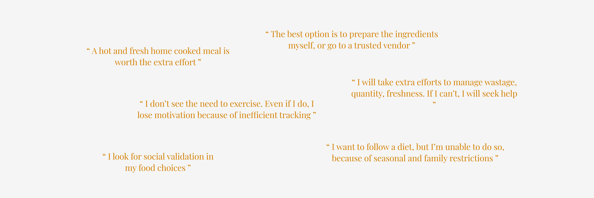
Top Insights
Revised Design Brief
Helping people with time constraints, plan and follow personalised healthy, tasty and varied meals for the entire family.
Problems to be solved:
- Reduce the cognitive load of planning a diet
- Time and resource optimisation
- Ensure a healthy and interesting diet
- Manage the kitchen inventory
- Track consumption and nutrition intake
Personas
When we bundled up all the problems faced by our user groups, they were quite varied and were from different sources. Injecting all these problems and behavioural patterns into a fictional character was needed, which basically meant creating personas. Not only does it help in finding out the ideal user for the proposed solution, but it also helps us focus on just the right problems to be solved and not get distracted.
We created narratives for multiple personas, detailing out different aspects of their lifestyle and dietary habits.
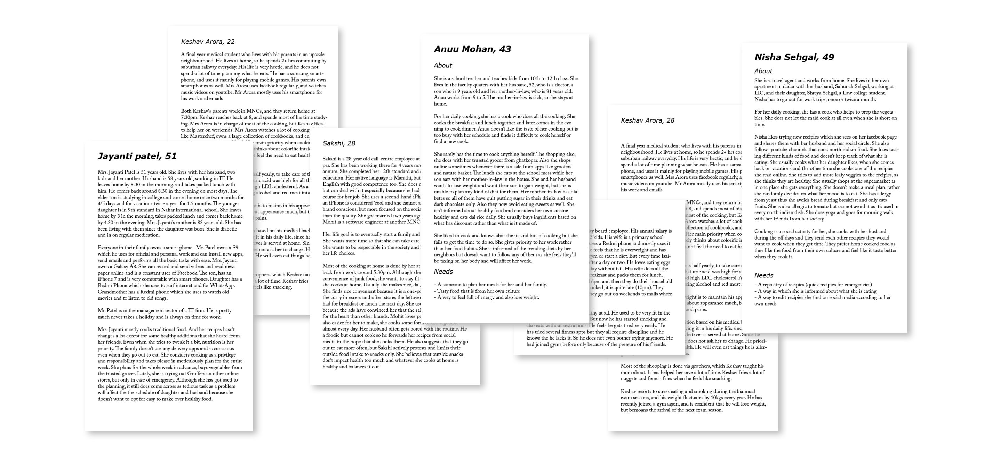
Persona stories
The personas created were then classified into
- Primary persona
- Secondary persona
- Supplementary persona
- Negative persona
The primary persona was chosen and detailed out to help us focus on the exact requirements.
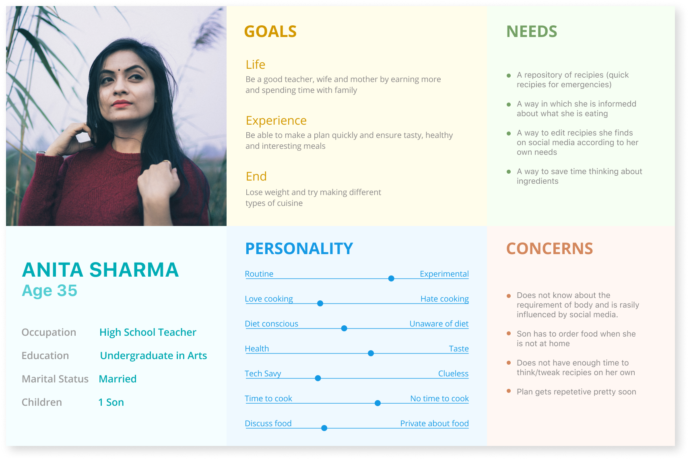
Primary persona
Scenarios
The next step was to imagine the scenarios of our primary persona and understand what exactly would our solution offer. This step helped us in coming up with features for the app.
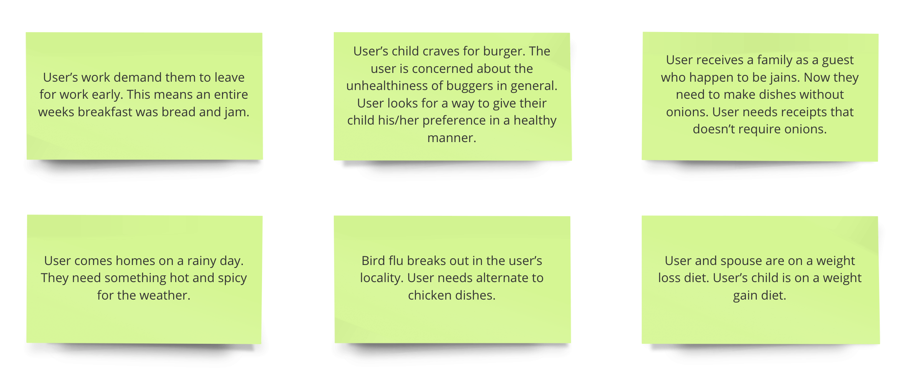
Scenarios
Information Architecture
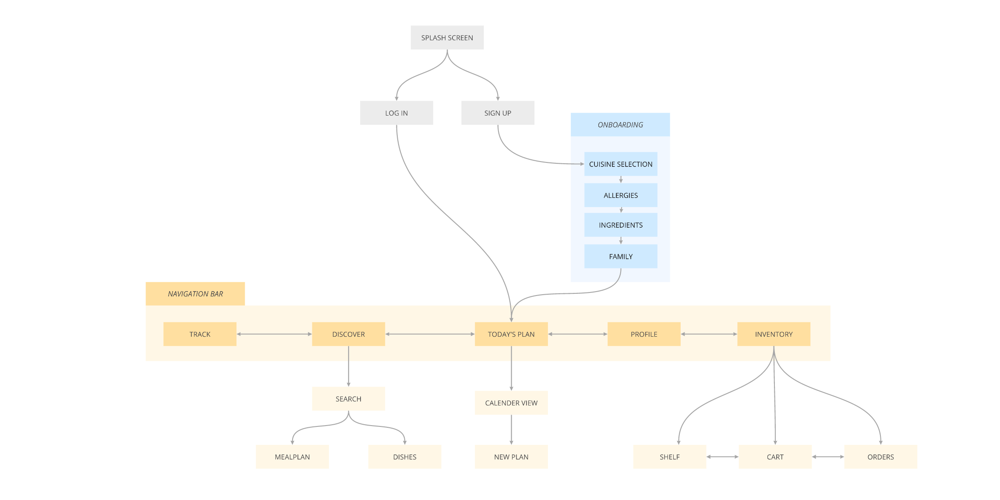
Design
Branding
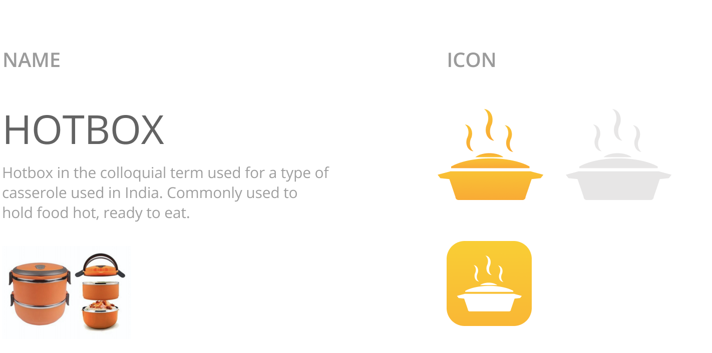
Style Guide
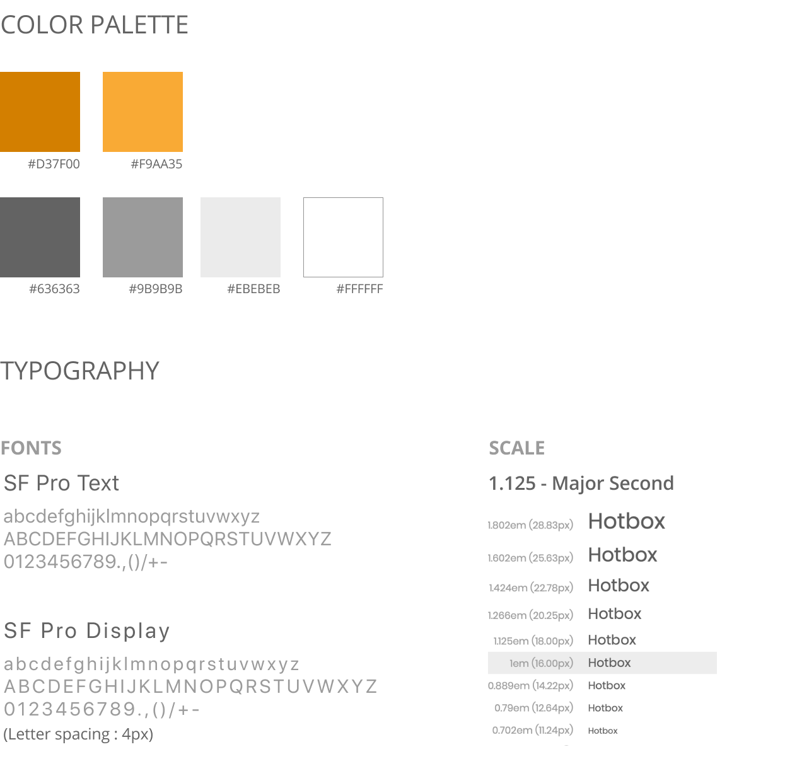
Style guide
Atomic Elements
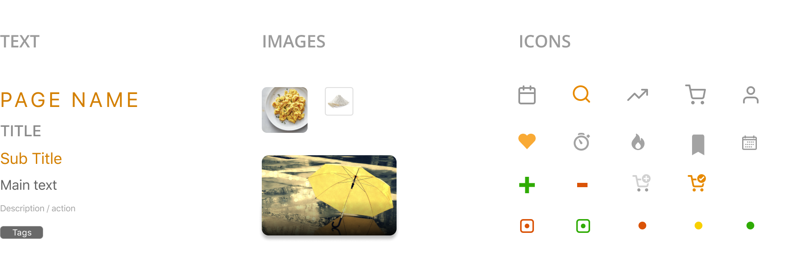
Atomic Elements
Compound Elements
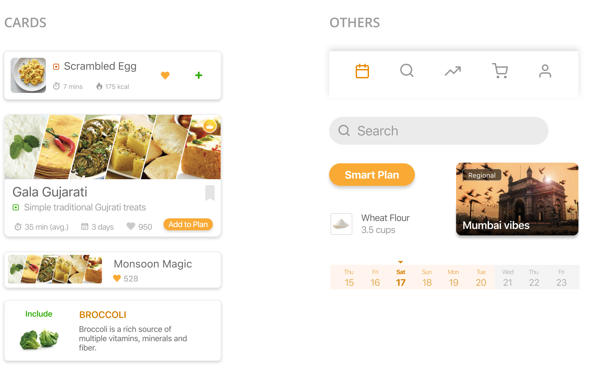
Compounds Elements
UI Design
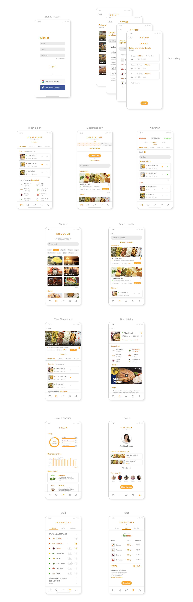
UI Design